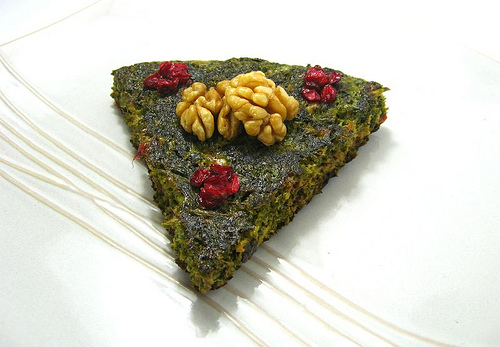

Home
Herbs Omlete

Description
Herbs Omlete is an easy to cook Iranian dish. This dish is very healthy with fresh herbs and eggs and very tasty.
It is a very popular Iranian quick and light meal. It can be served with bread or rice.
Ingredients
- 100g of herbs (chives, parsley and coriander)
- 1 egg
- Quarter of a tea spoon turmeric ground
- 1 table spoon of oil
- Salt and black pepper
- Barberries and walnuts (optional)
Steps
- Chop herbs finely and add them to a mixing bowl.
- Add egg, turmeric ground, salt and pepper (and barberries and walnuts) to mixing bowl and mix them well.
- Heat up oil in a frying pan and add the mixture to the pan.
- Put on the lid and let it fry on one side for 7-8 minutes.
- Flip your omlete and put the lid on to fry on the other side for 5 minutes.
- Serve in a plate with your choice of bread or rice.